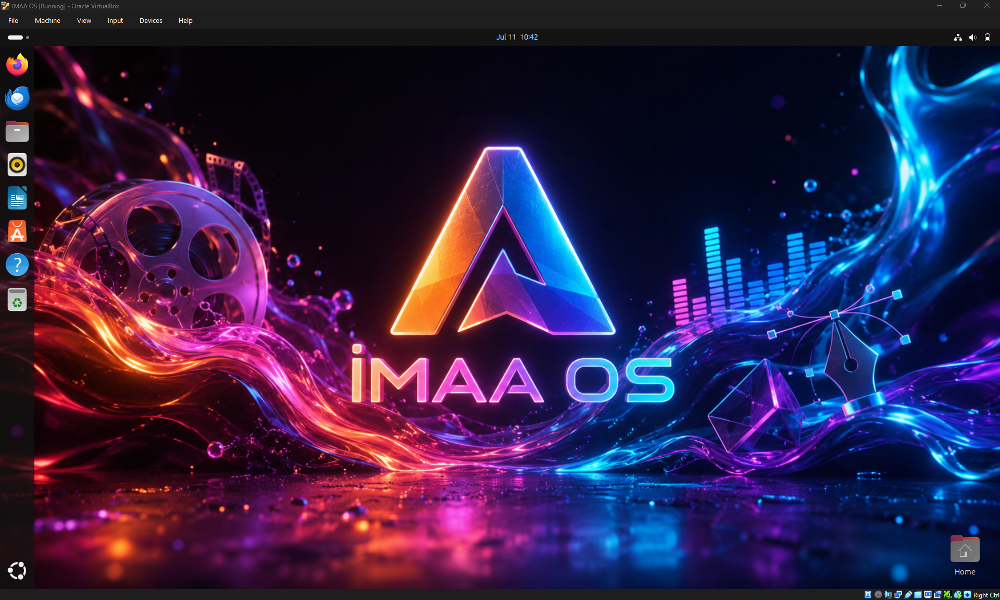
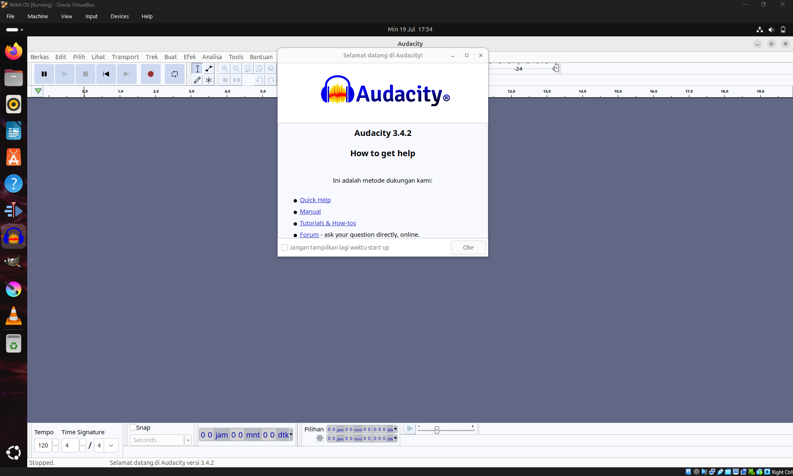
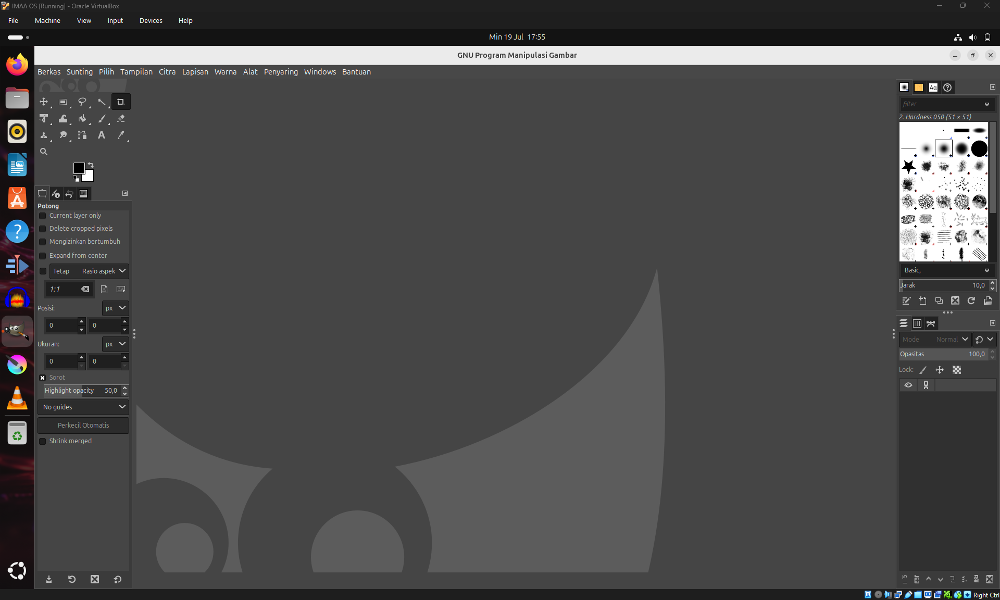
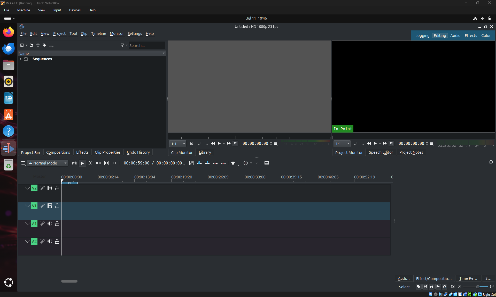
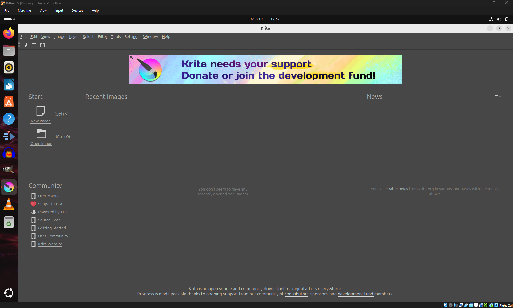
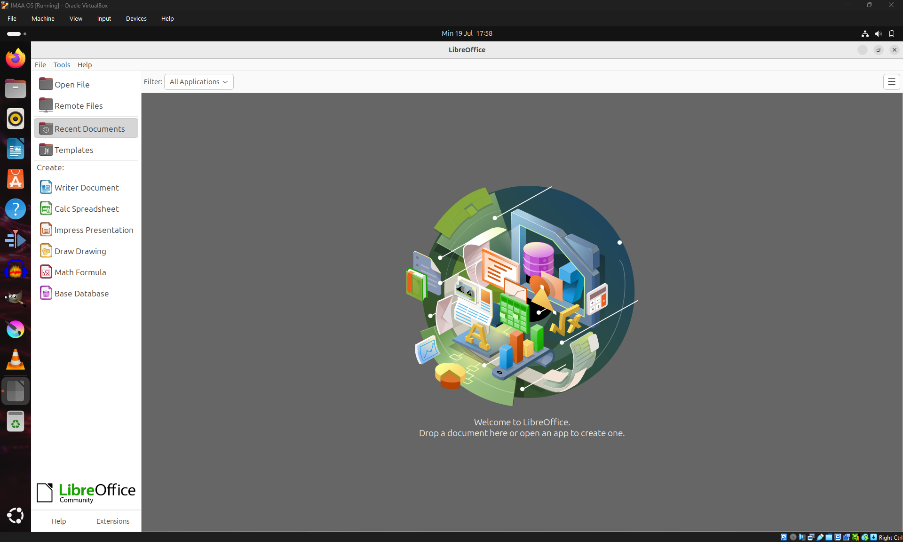
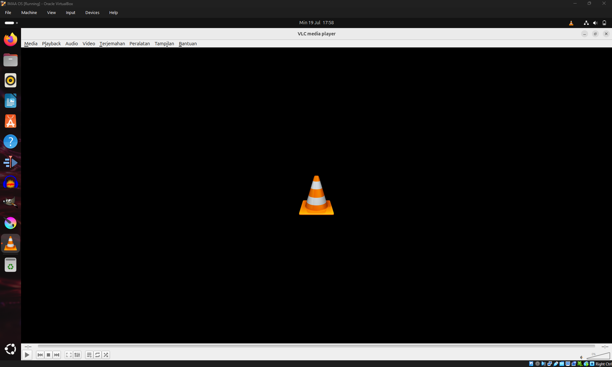

Studio Kreatif Anda,
Dalam Satu Sistem Operasi
IMAA-OS mengintegrasikan perangkat lunak multimedia profesional siap pakai untuk audio, video, 2D art, dan perkantoran dalam satu distribusi Linux yang cepat, stabil, dan modern.

Mengapa Memilih IMAA-OS?
Dibuat khusus untuk menghilangkan hambatan instalasi dan konfigurasi software multimedia di Linux.
Siap Pakai (Out-of-the-Box)
Tidak perlu lagi menghabiskan waktu berjam-jam menginstal library audio, codec video, dan software kreatif. Burn ISO, instal, dan langsung mulai berkarya.
Stabilitas Ubuntu 24.04 LTS
Ditenagai oleh basis sistem operasi kelas dunia yang menawarkan dukungan jangka panjang, keamanan tingkat tinggi, dan kompatibilitas hardware yang luas.
Performa Teroptimasi
Konfigurasi sistem yang disesuaikan untuk mengalokasikan sumber daya CPU dan RAM secara maksimal pada aplikasi kreatif yang sedang aktif.
Aplikasi Studio Pre-Installed
Kami menyertakan perkakas multimedia terbaik di dunia open source untuk segala kebutuhan kreatif Anda.
Audacity
Perekam dan editor audio multi-track yang canggih. Cocok untuk rekaman podcast, editing musik, efek suara (Foley), pembersihan noise, dan mastering audio dengan berbagai format plugin terpopuler.
- Rekaman audio live kualitas tinggi
- Pembersihan derau/noise secara instan
- Dukungan plugin VST, LV2, dan LADSPA

GIMP
Perkakas manipulasi gambar GNU (GIMP) adalah software professional untuk pengeditan foto, retouching, kolase, digital painting bebas, serta ekspor file ke berbagai format industri grafis.
- Pengeditan berbasis layer dan channel
- Kuas lukis yang sepenuhnya dapat dikustomisasi
- Fitur restorasi dan pembersih objek foto

Kdenlive
Editor video non-linear yang sangat andal. Dirancang untuk menangani pengeditan video multi-track dasar hingga tingkat lanjut dengan transisi kreatif, efek visual, grading warna, serta pembuatan teks (titling).
- Multi-track video and audio timeline editing
- Efek video & transisi real-time yang luas
- Rendering cepat dengan akselerasi GPU

Krita
Software melukis digital gratis dan open source untuk seniman konsep, ilustrator, pembuat matte paint, desainer tekstur, dan animator 2D. Dilengkapi dengan stabilisator kuas terbaik di kelasnya.
- Brush engine yang luar biasa realistis
- Stabilizer kuas untuk goresan tangan yang mulus
- Timeline animasi 2D frame-by-frame bawaan

LibreOffice
Suite perkantoran profesional yang lengkap dan tangguh untuk menulis dokumen (Writer), membuat spreadsheet data (Calc), mendesain slide presentasi (Impress), dan mengelola database.
- Kompatibilitas tinggi dengan Microsoft Office
- Ekspor PDF secara instan dan aman
- Tanpa biaya lisensi atau langganan bulanan

VLC Media Player
Pemutar media lintas platform legendaris. Memutar hampir semua file multimedia, disc, webcam, device, serta streaming internet tanpa perlu menginstal paket codec tambahan.
- Memutar semua format audio dan video (MKV, MP4, MP3, etc.)
- Konsumsi RAM dan CPU yang sangat ringan
- Kontrol audio, equalizer, dan subtitle dinamis

Jelajahi IMAA-OS
Tampilan visual pertama saat menyalakan sistem dan desain workspace kreatif Anda.
Spesifikasi Sistem
Pastikan komputer Anda memenuhi syarat untuk menjalankan IMAA-OS dengan performa terbaik.
-
Prosesor Intel / AMD Dual Core (2.0 GHz)
-
RAM (Memori) 4 GB RAM DDR3 / DDR4
-
Penyimpanan 25 GB Ruang Kosong (HDD/SSD)
-
Display Resolusi 1024 x 768 px
-
Prosesor Intel Core i5 / Ryzen 5 atau lebih cepat
-
RAM (Memori) 8 GB RAM (DDR4) atau lebih tinggi
-
Penyimpanan 50 GB Ruang Kosong (SATA/NVMe SSD)
-
Display Resolusi Full HD (1920 x 1080) & Dual Monitor
Masukkan spek perangkat keras Anda saat ini untuk melihat kecocokannya dengan IMAA-OS.
Unduh IMAA-OS 1.0
Dapatkan berkas ISO resmi secara gratis dan mulailah perjalanan kreasi Anda dengan software siap pakai.
Cara Membuat Bootable USB IMAA-OS
Hubungkan Flashdisk
Colokkan flashdisk ke port USB komputer yang akan digunakan sebagai media bootable.
Buka Rufus
Jalankan aplikasi Rufus. Jika muncul jendela User Account Control (UAC), pilih Yes untuk memberikan hak akses administrator.
Pilih Flashdisk
Pada bagian Device, pastikan drive yang dipilih benar-benar mengarah ke flashdisk yang akan diformat agar tidak salah memilih perangkat penyimpanan.
Pilih File ISO
Pada bagian Boot Selection, pilih opsi Disk or ISO Image, kemudian klik tombol SELECT dan pilih file IMAA-OS (.iso) yang telah disiapkan.
Konfigurasi Rufus
Atur Partition Scheme menjadi GPT dan biarkan Target System menggunakan UEFI (non CSM) agar kompatibel dengan komputer modern.
Atur Format & Mulai
Biarkan pengaturan File System mengikuti konfigurasi otomatis Rufus (umumnya FAT32). Ubah Volume Label jika diperlukan, kemudian klik START dan tunggu hingga proses pembuatan bootable selesai.